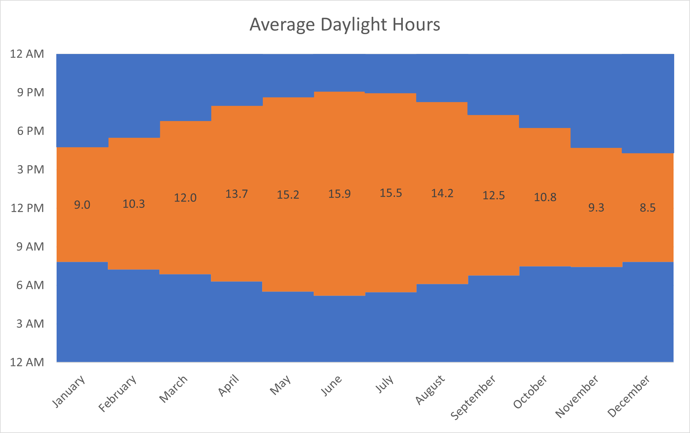

Washington State Electricity Production
The USA has re-joined the Paris Climate Accord1and is beginning to push in the right direction when it comes to green electricity production. The state of Washington is a leader in the Lower 48 when it comes to producing electricity from green sources, with the vast majority stemming from hydroelectric dams2. However, there is still around 20% from coal and gas fired power plants and the aim should be to eliminate this completely. Further construction of dams is not always feasible due to the destruction of habitat for animals and displacement of people3.

Sources(links):
1. Paris Climate Agreement: Everything You Need to Know, NRDC, Accessed: February 2021
2. “Washington State Profile and Energy Estimates”, eia, Jan. 2021
3. G. Ledec and J. D. Quintero, “Good dams and bad dams: environmental criteria for site selection of hydroelectric projects,” Lat. Am. Caribb. Reg. Dev. Work. Pap. No. 16, vol. 16, no. November, p. 21, 2003, [Online]
The Solar Resource in Washington State
A major challenge of relying on solar energy in WA is that the bulk of the energy is consumed in densely populated Western Washington, known for having overcast weather for half of the year. Solar insolation, or the available solar energy that can be capured on a given surface area, is rather abundant in Eastern WA.
This presents an opportunity of powering Eastern WA communities, while also sending energy over the cascade mountain range to Western WA.
Fortunately, the infrastructure to supply Western WA with energy produced in Eastern WA is largely already in place. Electric power is transported across the Cascade Mountain Range every day. In fact, Eastern WA already supplies hydroelectric power throughout WA, 10 other states, and Canada.
The following visualization shows the population distribution in WA and the available average solar insolation, in kWh/m^2/day for a typical year.

source (population)
source (solar insolation)
Additionally, the figure below illustrates the current paths of power distribution in the state of Washington. This shows that the infrastructure is in place to send solar energy produced in the East side of the state could be easily distributed to the more populated West side of the state.

Sunshine in Washington
Solar panels operate best in cold conditions;however, the sun must be out. Washington is known for its rainy season and hot summers. Although Washington may not have optimal weather for solar panels it does have some of the longest days during the Summers and Winters.
During the summer season sunshine can beam on solar panels to generate energy for up to 15.9 hours in June. In winter it could be as low as 8.5 hours, but the solar panels may perform better due to the colder weather.
source